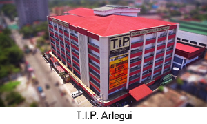
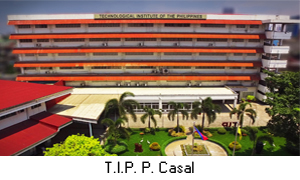
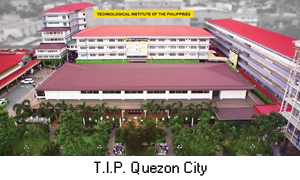
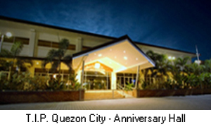
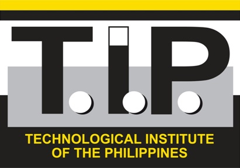
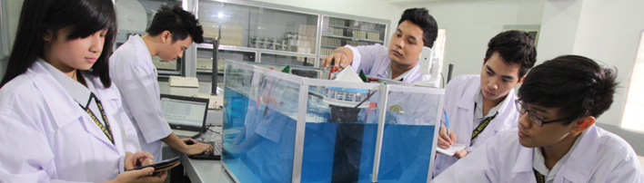
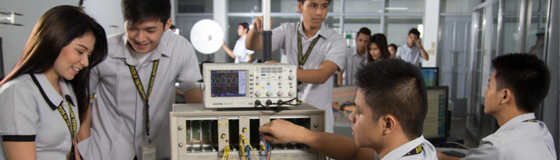
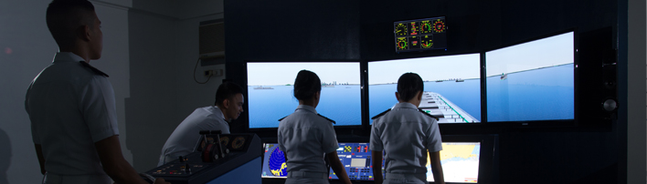
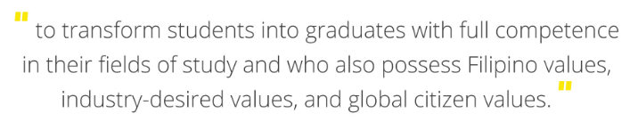
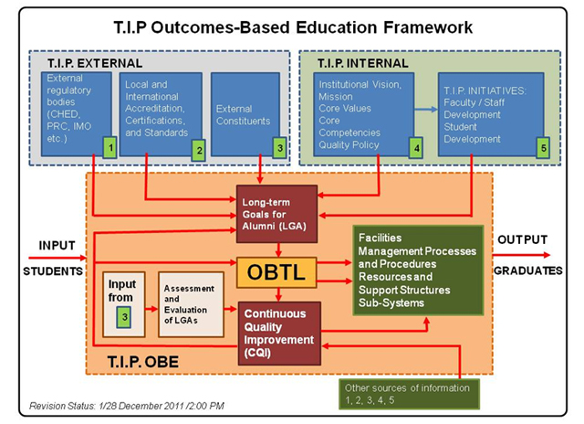

On February 8, 1962, a group of educators headed by Engineer Demetrio A. Quirino Jr. and Dr. Teresita U. Quirino established the TECHNOLOGICAL INSTITUTE OF THE PHILIPPINES as a private non-sectarian stock school.
T.I.P. laid down its objectives based on the vision of its founders: 1) to maintain a high standard of instruction; 2) to bring within the reach of the masses the blessings of higher education; and 3) to cooperate with the
government in the implementation of its economic and social amelioration programs. The School had an initial enrollment of 2,400 which steadily increased.
T.I.P. then directed itself toward specialization in the field of technology. In 1977, it offered a two-year associate course in Marine Engineering. In 1980, the Liberal Arts, Education and high school programs were phased
out to make way for the school’s new thrust. In 1981, the student population already exceeded 23,000.
T.I.P. opened its Quezon City campus in 1983 located at 20th Avenue, Cubao. T.I.P.QC through the years acquired adjacent properties including a frontage along Aurora Boulevard. The Quezon City campus has ten (10) main buildings
spread out in the 3.3-hectare site.




Through the years, T.I.P. Manila also acquired ownership of two (2) major sites totaling 2.3 hectares namely, the P. Casal and the Arlegui properties. The P. Casal Campus has three (3) main buildings, one of which is a six-storey
building. The Arlegui Campus, on the other hand, also has a six-storey building.
About the President
Dr. Elizabeth Quirino-Lahoz
Dr. Elizabeth Quirino-Lahoz is the current Chairman of the Board of Trustees and concurrent third president of the Technological Institute of the Philippines (T.I.P.), with campuses in Manila and Quezon City. She assumed
the presidency in 2003. Dr. Lahoz succeeded Dr. Teresita U. Quirino and Engr. Demetrio A. Quirino, Jr., T.I.P. founders and first and second T.I.P. presidents, respectively.
Dr. Lahoz graduated Magna Cum Laude, AB Communication Arts, from Maryknoll College in 1973. She was also class valedictorian and Communication Arts area awardee. She completed her Master in Business Administration for Senior
Executives and Professionals from the Ateneo de Manila University in 1994 and finished her Doctor of Philosophy in Education Major in Educational Administration from the University of the Philippines in 2006.
Dr. Lahoz serves in various professional and civic activities. She is a member of the Technical Committee for Educational Leadership and Foundations of the Commission on Higher Education (CHED); the Board of Trustees and the
Quality Assurance and Accreditation committee of the Philippine Association of Colleges and Universities (PACU); the Board of Trustees, the Executive Committee, and the Finance Committee of the Private Education Retirement
Annuity Association (PERAA); and the Pi Lambda Theta, an international honors society and professional association in education, Philippine Area Chapter.
Awards and Recognitions
In 2013 the Pi Lambda Theta, Philippine Area Chapter, awarded Dr. Lahoz the PLT Eminent Filipino Women Educators Award in recognition of "her outstanding contribution to Philippine Education, Filipino teachers and learners.”
In 2006, Dr. Lahoz’s dissertation, ”Portrait of the Filipino as an Outstanding Private School Administrator” was adjudged the “Most Outstanding Dissertation” of the College of Education, University of the Philippines. She was
a featured alumna in GURU: Distinguished Educators (UPEAA, 2010) by the University of the Philippines Education Alumni Association (UPEAA).
In 2016, Dr. Lahoz was recognized as one of Go Negosyo’s Inspiring Women Entrepreneurs, under the Large Enterprise Category. As second-generation T.I.P. administrator, Dr. Lahoz continues the legacy of the school’s founders,
her parents, the real entrepreneurs, and the empowerment of the Filipino youth towards national development.
In 2018, Dr. Quirino-Lahoz was named as one of the Maryknoll/Miriam College Amazing Alumni Achiever (Triple A) Awardees. MCTimes (2018) reported that Dr. Quirino-Lahoz “is truly a remarkably intelligent and driven woman with
a compassionate heart and a will for service. She embodies loyalty and commitment, manifested in her determination to further and protect the causes she loves: her family and friends, education, T.I.P., the Filipino youth,
and her country.”
Vision and Mission
Vision
In the year 2020, T.I.P. envisions itself to be:
a leading professional technological institution in the Philippines through
outcomes-based education, and
a culture of innovation and continuous improvement, and
an institution whose graduates contribute to the welfare of society.
Mission
The Technological Institute of the Philippines (T.I.P.) is committed:
to continue to empower the Filipino youth through technological education of the highest standard, employing outcomes-based education and state-of-the-art laboratories
to transform students into graduates with full competence in their fields of study and who also possess:
The Filipino values of honesty and integrity, service to others, the importance of family, frugality, resilience in the face of adversity, and the willingness to surmount difficulties in order to succeed and
excel.
The industry-desired values of positive work attitude, good communication skills, proficiency in computers and in the software that pertain to their fields of study, initiative, and the openness to keep on learning
to reinvent themselves.
The global citizen values of mindfulness, respect for cultural diversity, care for the environment and the desire to contribute to the general welfare of society.
About the Logo
A fusion of technology and traditional education. The willingness to evolve in the face of new challenges, while maintaining the same passion and steadfastness that build an institution. An institution that imbues its students
with Filipino values, industry and global citizen values. An institution that transforms students into graduates who will contribute to the general welfare of society.

The new T.I.P. logo is dominated by lines and symmetry, both important elements in engineering. Behind every great structure is the right mix of lines placed in symmetry. The proportion between the gray lower block and the
white upper block is 60:40 to subliminally reinforce the idea of stability. The base, which is colored black, represents a firm and strong foundation. The white dots in our new T.I.P. acronym is our non-verbal way, in visual
graphic form, to suggest to the reader to read TIP as T.I.P. and not as “tip”.
Quality Policy

The TECHNOLOGICAL INSTITUTE OF THE PHILIPPINES is committed to EXCELLENCE and TOTAL QUALITY in Education.
In pursuit of such a commitment, T.I.P. shall:
Educate and mold men and women who are
problem solvers, innovators and lifelong learners and
assets to the country and to the world.
Provide students with quality instruction and administrative services that would exceed their expectations and that of other interested parties by always keeping in mind that the satisfaction of their needs and expectations
come first.
Endeavor to be the best technological school by committing itself to continuous improvement.
Practice a proactive leadership that
forms decisions on the basis of facts, including the attendant risks and opportunities
ensures compliance to statutory and regulatory requirements
manages by constantly reviewing and improving work procedures and processes, the physical plants, alliances and partnerships to improve the overall system of operations
Create a culture where every employee accepts responsibility for quality.
Core Values

Cleanliness in Mind, Body and Surroundings
Cleanliness as a way of life. A wholesome attitude, a healthy body in clean surroundings as the only way for real learning and working to take place.
Community Spirit
A strong sense of community, a willingness to cooperate in planning and realizing goals for the common good.
Service Orientedness
A culture of altruism in the context of an educational institution where work is towards helping others with little regard for self-interest. Teachers impart knowledge and give of themselves unselfishly. Employees and administrators
serve with the knowledge that service to others is their reason for being, and the school, as a community, gives back to society.
Commitment to Extend Scholarship Grants
The allocation of the resources of the school to allow poor but deserving students access to quality education through scholarships and grants. This is a commitment of the school's founder to the Filipino youth, a commitment
that will always be supported by T.I.P.
Core Competencies
Continuing Improvement Towards Total Quality
A relentless drive towards the improvement of work process in order to achieve quality in all aspects of operations with the objective of delivering quality service to the School's constituents.
Innovativeness In Physical Laboratories and Shops
The ability to innovate in order to improve facilities, laboratories and shops; creative solutions in order to provide and design facilities that are up-to-date and highly conducive to teaching, learning and working.
Creative Management
The ability to innovate so that financial and human resources are conserved and harnessed to the fullest to ensure viability and continued delivery of quality instruction and quality administrative services.
An Organization Willing to Learn
The dynamism, openness and willingness to grow and improve by learning new and better ways of doing things; an organization that does not resist the pain brought about by new learning, new technology, new system, and new policies.
Ability to Engage Technology
The integration of technology in the management of the school and in the conduct of research and instruction.
Quest for Excellence
In order to achieve excellence, the quest is broken down into small steps beginning with setting personal standards higher than those of the School and for the School, and the community, to set standards higher than those of
the CHED and national government.
Graduate Attributes
T.I.P. Graduate Attributes
Institutional Intended Learning Outcomes (IILO)
Professional Competence
Demonstrate understanding and mastery of the fundamental knowledge and skills required for effective professional practice in the field of specialization.
Critical Thinking and Problem Solving Skills
Exercise critical and creative thinking in providing solutions to discipline-related problems.
Communication Skills
Apply effective communication skills, both orally and in writing, using the English language.
Lifelong Learning
Utilize lifelong learning skills in pursuit of personal development and excellence in professional practice
Social and Ethical Responsibility
Hold personal values and beliefs as ethical professional consistent with Filipino family values, industry-desired values and global citizen values.
Productivity
Contribute to nation-building and national development through application of new technology
Interpersonal Skills
Work effectively in multi-disciplinary and multicultural teams
T.I.P. Outcomes-Based Education

The T.I.P. Implementation of outcomes-based education was driven by the following external entities: 1) Regulatory bodies such as the Commission on Higher Education (CHED), the Professional Regulation Commission (PRC), International
Maritime Organization (IMO), among others, 2) Local and international accrediting bodies, specifically, the Philippine Association of Colleges and Universities Commission on Accreditation (PACUCOA), the Philippine Technological
Council-Accreditation and Certification Board for Engineering and Technology - Engineering Accreditation Commission (PTC - ACBET - EAC), and ABET, Inc., 3) International certifying bodies, and 4) Feedback from other external
constituents.
It is also guided by existing T.I.P. internal policies and initiatives: 1) The T.I.P. Vision, Mission, Core Values, and Core Competencies, 2) T.I.P. Quality Policy, and 3) Other T.I.P. initiatives that supported the OBE implementation
such as a) the T.I.P. Faculty and Staff Development Program, and b) The T.I.P. Student Development Program.
The institutional outcome statement was formulated based on the T.I.P. graduates attributes. Outcomes at the program level and course level were also formulated aligned with institutional outcomes.
The framework which T.I.P. adopted in its OBTL implementation revolves around three important elements: 1) Intended Learning Outcomes (ILOs), 2) Teaching and Learning Activities (TLAs) and 3) Assessment Tasks (ATs).

In support of T.I.P.’s outcomes-based education and as a strategy to promote academic excellence, T.I.P. has also embarked on a proactive plan to implement outcomes-based teaching and learning or OBTL in all its academic programs
using the City University of Hong Kong OBTL model.
The OBE process is also supported by facilities, management processes and procedures resources and support structures sub-systems.

The results of the assessment and evaluation are used as inputs in the continual improvement of the instructional process specifically on the constructive alignment of ILOs, TLAs, and ATs.
It is expected that the implementation of OBTL as part of T.I.P.’s OBE would hasten the realization of T.I.P.’s mission "to transform students into graduates with full competence in their fields of study and who also possess
Filipino values, industry-desired values, and global citizen values”.
Academic Policies
Students' On-The-Job Training / Practicum Program
RATIONALE
The T.I.P. Students' On-the-Job Training/Practicum Program is designed in fulfillment of the school's mission to transform students into graduates with full competence in their fields of study. This document shall set the general
policies and guidelines for the effective implementation of the On-the-Job Training/Practicum program across all disciplines to ensure the program's effective facilitation and the attainment of its set objectives. The Maritime's
Shipboard Training and Shipboard Familiarization are governed by a different set of guidelines and not covered by this policy.
OBJECTIVES OF THE ON-THE-JOB TRAINING / PRACTICUM PROGRAM
The T.I.P. Students' On-the-Job Training/Practicum Program aims to:
Provide the students an opportunity to be exposed in an actual work setting and assimilate their academic learning into practical applications.
Develop and instill among students the industry-desired values of positive work attitude, good human relations, competency in technical skills that pertain to their fields of study, and the openness to keep on learning to reinvent
themselves.
GENERAL POLICIES
The requisite(s) of the On-the-Job Training/Practicum is defined in the course description of each program curriculum.
The required number of training hours specified in the course description may be extended by the company whenever necessary, subject to mutual agreement between the student, school and the company.
Only students who are enrolled in the On-the-Job Training/Practicum subject are covered by this policy.
T.I.P. Hymn and T.I.P. Fight Song
T.I.P. Hymn
YOU’LL BE IN MY HEART FOREVER
Music and Lyrics by Prudencio ”Dero” Pedero Jr.
I You sharpen my mind with knowledge and truth You fill up my hear with gladness and joy You lift up my life to heights I’ve never known You teach me, guide me, you inspire me
II You bring out the best of what I can be You give me the strength to believe in me You’ve given me wings to fly above the rest And lead me on to victory
REFRAIN You are my strength, my hope, my guiding light You’ve added values and meaning to my life Your teachings and caring I’ll always remember My teacher and friends I’ll always treasure I’ll cherish the good times we’ve
spent together T.I.P., dear T.I.P.
You’ll be in my heart forever
REPEAT REFRAIN
T.I.P.!
T.I.P. Fight Song
WE'RE ON TOP OF THE WORLD
Music and Lyrics by Prudencio ”Dero” Pedero Jr.
I Lift up your heart and hold your head up high
We’re gonna win, we’re gonna fly We’re gonna reach our lofty dreams We’ve got the strength; we’ve got the mind
II We’ve got the grit and the determination We’ve got the courage and the drive We will exceed all expectations We’re gonna take them by surprise
REFRAIN We’re on top of the world T.I.P. We’re the tip of the top of the world! We’re on top of the world T.I.P. We’re the tip of the top of the world!
BRIDGE Together, we are invincible United we are strong We do our very best On top is where we belong